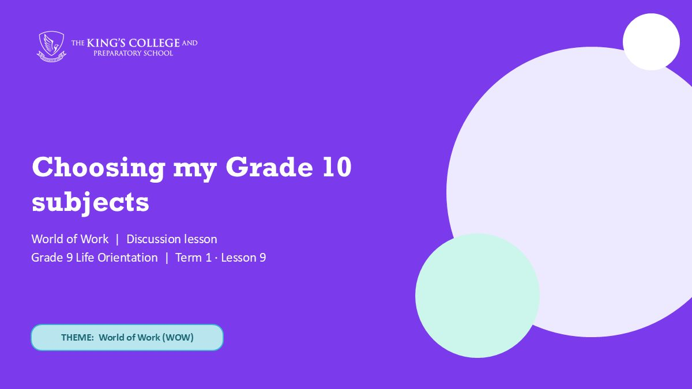

Term 1 · Lesson 9 · Discussion lesson
Choosing my Grade 10 subjects
Start here
Today I will
- Know the compulsory subjects for Grades 10–12
- Explain gatekeeper subjects and APS
- Match subjects to possible careers
Thabo wants to choose the same subjects as his friends. What could go wrong?
Words to Know
| Word | Meaning |
|---|---|
| Compulsory subject | A subject everyone must take (e.g. two languages, Maths or Maths Literacy, LO). |
| Elective | A subject you choose. |
| Gatekeeper subject | A subject required for certain careers or courses (e.g. Mathematics for engineering). |
| APS | Admission Point Score: points from your matric marks that universities use for entry. |
| Maths vs Maths Literacy | Maths is theoretical and needed for many degrees; Maths Literacy is everyday maths. |
| Subject package | The set of subjects the school offers together. |
Slides

Videos
Notes
Your Grade 10 subjects shape the courses and careers open to you after school. Choosing well means knowing yourself, knowing what careers need, and not simply following your friends.
Compulsory and elective subjects
In Grades 10–12 (NSC) every learner takes seven subjects: four compulsory and three electives.
| Compulsory | Electives (examples) |
|---|---|
| A home language | Physical Sciences, Life Sciences |
| A first additional language | Accounting, Business Studies, Economics |
| Mathematics OR Mathematical Literacy | Geography, History |
| Life Orientation | Visual Arts, Dramatic Arts, Music, IT, Engineering Graphics and Design |
Schools offer electives in subject packages. Check your school's packages and the due date for your form.
Mathematics or Mathematical Literacy?
Mathematics is more theoretical and is required for many degrees (engineering, medicine, science, accounting, IT). Mathematical Literacy is everyday maths (budgets, measurements, interpreting graphs). It is useful, but it closes the door to many university courses. If you are unsure, Mathematics keeps more options open, but choose honestly based on your ability and support.
Gatekeeper subjects
A gatekeeper subject is a subject you must have for a certain course or career.
| Career / course | Gatekeeper subjects |
|---|---|
| Medicine, physiotherapy | Mathematics, Physical Sciences, Life Sciences |
| Engineering | Mathematics, Physical Sciences |
| Chartered accountant | Mathematics (Accounting helps) |
| Nursing | Mathematics or Maths Literacy (check), Life Sciences |
| Architecture | Mathematics; a portfolio (Visual Arts or EGD helps) |
Requirements differ between universities and change over time. Always check the university's website.
APS: Admission Point Score
Universities turn your matric marks into points. One common scale gives 7 points for 80% and above, 6 for the 70s, 5 for the 60s and 4 for the 50s; each university sets its own rules. They add the points for six subjects (LO usually doesn't count) and set a minimum APS for each course. This is why marks in Grades 10–12 matter.
Choosing wisely
- Choose for your future, not your friends.
- Choose subjects you are interested in and can do well in.
- Check the gatekeepers for two or three careers you like.
- If unsure, choose subjects that keep more doors open.
- Ask for advice: parents, teachers, the counsellor, people in careers. Ask God for wisdom (James 1:5).
Common mistakes when choosing subjects
- Following friends instead of your own interests and goals.
- Choosing a subject because of a teacher you like, without checking the content.
- Dropping Mathematics without checking which careers need it.
- Choosing subjects you think are 'easy' rather than ones you can do well in.
- Leaving the decision to the last day.
Case study: Thabo's subject form
Thabo's friends are all choosing Accounting and want him to join them. Thabo enjoys building things and helped his uncle fix a roof in the holidays. He spoke to Mr Ncube, his isiZulu teacher, who encouraged him to look at Engineering Graphics and Design and Physical Sciences, and to check the requirements for careers in construction and engineering. Thabo realised that these careers need Mathematics, so he decided to keep Maths and ask for extra help. He still sees his friends at break and in basketball.
Questions to think about: What influence did Thabo's friends have? How did Mr Ncube help? Why was keeping Mathematics a wise choice?
Worked exam answer
Question: Explain why it is important to check gatekeeper subjects before choosing Grade 10 subjects. (1 x 2) (2)
Answer: Some careers require specific subjects, such as Mathematics for engineering ✓ so choosing the wrong subjects now can close the door to that career later ✓.
Know the four compulsory subjects, define gatekeeper subject and APS, and evaluate a learner's subject choice in a scenario.
Choose subjects for your future, not for your friends.

James says if we lack wisdom we should ask God. Who else can give you wise advice for your subject choices?
In class: Subject match
- Pick two careers you are interested in.
- Find (or guess) the gatekeeper subjects for each.
- Choose three electives that keep both careers open.
- Write one question to ask a teacher or counsellor.
Test yourself
- Name the compulsory subjects for Grades 10–12.
- What is a gatekeeper subject?
- What does APS stand for?
Show answers
1. Two languages, Maths or Maths Literacy, LO. 2. A subject required for certain careers or courses. 3. Admission Point Score.
Finished early?
See what one university course actually asks for.
- Open the undergraduate admissions page of one SA university (e.g. University of Pretoria, Wits, UCT or Stellenbosch).
- Choose one course that interests you and write down its minimum APS and required (gatekeeper) subjects.
- Compare it with the Grade 10 subjects you are thinking of choosing.
- Write one sentence: do your subjects keep this door open? If not, what would you change?